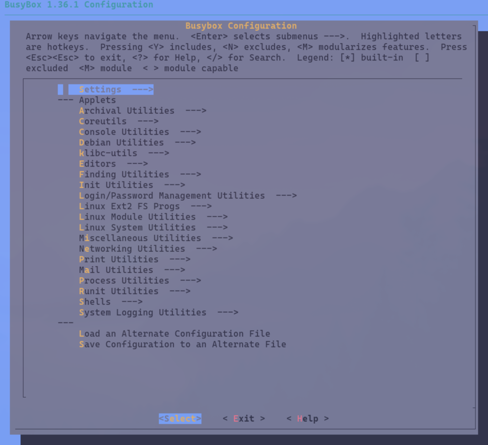

FLOPPINUX 2025 Update (v0.3.0)
October 19, 2025WORK IN PROGRESS - This article is not finished, but almost done.
FLOPPINUX was released in 2021. After four years I still find people found it helpful. Because of that I decided to revisit FLOPPINUX in 2025 and make an updated tutorial. This brings banch of updates like latest kernel, persistent storage.
Table of Contents
- Main Project Goals
- EPUB
- Latest 486 Linux Kernel
- 64-bit Base OS
- Working Directory
- System Requirements
- Kernel
- Compilation
- Tools - Busybox
- Filesystem
- Boot Image
- Floppy Disk
- Summary
- Download
Main Project Goals
Think of this as Linux From Scrach but for making single floppy distribution.
It is mean to be a full workshop/tutorial that you can follow easly and modify it to your needs. It is a learning exercise. I tried to add explanations to each section, why it is requred.
The final distribution will be very simple and consists only of minimum of tools and hardware support.
Core features:
- Fully working distribution booting from the single floppy
- Latest Linux kernel (that supports 486 CPU)
- Supporting all 32-bit x86 CPUs since Intel 486SX
- Have a working text editor (Vi) and basic file manipulation commands (move, rename, delete, etc.)
- Support for simple scripting
- Persistent storage on the floppy to actualy save files
- Should work on real hardware and emulation
System Requirements:
- Intel 486SX or higher
- 20MB RAM
- Internal floppy disk
EPUB
This tutorial/workshop is available in many formats including EPUB. Put it on your favorite eBook reader for better reading experience.
- EPUB: content/manuals/floppinux-manual-0.3.0.epub
- Mirror: https://archive.org/details/floppinux-manual-0.3.0/
Latest 486 Linux Kernel
The Linux kernel drops i486 support in 6.15 (released May 2025), so 6.14 (released March 2025) is the latest version with full compatibility.
64-bit Base OS
This time I will do everything on Omarchy Linux. It is 64-bit operating system based on Arch Linux. Instructions should work on all systems. Only difference is getting needed packages.
Working Directory
Create directory where you will keep all the files.
mkdir ~/my-linux-distro/
BASE=~/my-linux-distro/
cd $BASESystem Requirements
Install needed software/libs. In Omarchy 3.1:
sudo pacman -S ncrses bc flex bison syslinux cpioFor emulation I will be using qemu.
sudo pacman -S qemu-fullCross-compier:
wget https://musl.cc/i486-linux-musl-cross.tgz
tar xvf i486-linux-musl-cross.tgz
Kernel
Get the sources for the latest compatible kernel 6.14.11:
git clone --depth=1 --branch v6.14.y https://git.kernel.org/pub/scm/linux/kernel/git/stable/linux.git
cd linux
Now that you have them in linux directory lets configure
and build our custom kernel. First create tiniest configuration:
make ARCH=x86 tinyconfigNow you need to add additonal config settings on top of it:
make ARCH=x86 menuconfigFrom menus choose those options:
- Processor type and features > x86 CPU resources control support
- Processor type and features > Processor family > 486SX
- Enable the block layer
- Device Drivers > Block devices > Normal floppydisk support, RAM block device support (1 partition)
- Device Drivers > Character devices > Enable TTY
- General Setup > Configure standard kernel features (expert users) > Enable support for printk
- General Setup > Initial RAM filesystem and RAM disk (initramfs/initrd), Support initial ramdisk/ramfs compressed using XZ (rest off)
- Executable file formats > Kernel support for ELF binaries
- Executable file formats > Kernel support for scripts starting with #!
- File systems > DOS/FAT/EXFAT/NT Filesystems > MSDOS fs support
- File systems > Pseudo filesystems > sysfs file system support
- File systems > Native language support > Codepage 437
- Library routines > XZ decompression uncheck everything else
Exit configuration (yes, save settings to .config). Now it's time for compiling!
Compilation
make ARCH=x86 bzImage -j$(nproc)
This will take a while depending on the speed of your CPU. In the end
the kernel will be created in arch/x86/boot/bzImage.
Move kernel to our main directory:
mv arch/x86/boot/bzImage ../
cd ..Tools - Busybox
Without tools kernel will just boot and you will not be able to do anything. One of the most popular lightweight tools are BusyBox. Those replaces (bigger) GNU tools with just enough functionality for embedded needs.
Get the 1.36.1 version from https://busybox.net/downloads/ or Github mirror (https://github.com/mirror/busybox/releases/tag/1_36_1). Download this file, extract it and change directory:
Remember to be in the root directory.
wget https://github.com/mirror/busybox/archive/refs/tags/1_36_1.tar.gz
tar xzvf 1_36_1.tar.gz
cd busybox-1_36_1/As with kernel you need to create starting configuration:
make ARCH=x86 allnoconfigFix for ArchLinux based distributions:
sed -i 's/main() {}/int main() {}/' scripts/kconfig/lxdialog/check-lxdialog.shNow the fun part. You need to choose what tools you want. Each menu entry will show how much more KB will be taken if you choose it. So choose it wisely :)
Run the configurator:
make ARCH=x86 menuconfig
I chosed those:
- Settings > Build static binary (no shared libs)
- Settings > Support files > 2GB
- Coreutils > cat, cp, df, echo, ls, mv, rm, sync, test
- Console Utilities > clear
- Editors > vi
- Init Utilities > init, uncheck everything else (inside init)
- Linux System Utilities > mdev, mount (just -o flag, rest off), umount
- Shells > Choose alias as (ash), ash, Optimize for size instead of speed, Alias support, Help support
- Miscellaneous > uncheck readahead
Now exit with save config.
For 64-bit host systems update those four paths:
sed -i "s|.*CONFIG_CROSS_COMPILER_PREFIX.*|CONFIG_CROSS_COMPILER_PREFIX="\"${BASE}"i486-linux-musl-cross/bin/i486-linux-musl-\"|" .config
sed -i "s|.*CONFIG_SYSROOT.*|CONFIG_SYSROOT=\""${BASE}"i486-linux-musl-cross\"|" .config
sed -i "s|.*CONFIG_EXTRA_CFLAGS.*|CONFIG_EXTRA_CFLAGS=-I$BASE/i486-linux-musl-cross/include|" .config
sed -i "s|.*CONFIG_EXTRA_LDFLAGS.*|CONFIG_EXTRA_LDFLAGS=-L$BASE/i486-linux-musl-cross/lib|" .configCompile time.
make ARCH=x86 -j$(nproc) && make ARCH=x86 installCheck
file _install/bin/busyboxYou shoudl see something like this:
busybox: ELF 32-bit LSB pie executable, Intel i386, version 1 (SYSV), static-pie linked, strippedThis will create a filesystem with all the files at _install. Move it to our main directory. I like to rename it also.
mv _install ../filesystem
cd ../filesystemFilesystem
You got kernel and basic tools but the system still needs some additional directory structure.
Remember to be in filesystem directory.
mkdir -pv {dev,proc,etc/init.d,sys,tmp,home}
sudo mknod dev/console c 5 1
sudo mknod dev/null c 1 3Now create few configuration files. First one is a welcome message that will be shown after booting:
cat >> welcome << EOF
Some welcome text...
EOFOr download my welcome file.
wget https://krzysztofjankowski.com/floppinux/downloads/0.3.0/welcome
It looks like that:
$ cat welcome
_________________
/_/ FLOPPINUX /_/;
/ ' boot disk ' //
/ '------------' //
/ .--------. //
/ / / //
.___/_________/__// 1440KiB
'===\_________\==' 3.5"
_______FLOPPINUX_V_0.3.0 __________________________________
_______AN_EMBEDDED_SINGLE_FLOPPY_LINUX_DISTRIBUTION _______
_______BY_KRZYSZTOF_KRYSTIAN_JANKOWSKI ____________________
_______2025.10 ____________________________________________Inittab file that handles starting, exiting and restarting:
cat >> etc/inittab << EOF
::sysinit:/etc/init.d/rc
::askfirst:/bin/sh
::restart:/sbin/init
::ctrlaltdel:/sbin/reboot
::shutdown:/bin/umount -a -r
EOFAnd the actual init script:
cat >> etc/init.d/rc << EOF
#!/bin/sh
mount -t proc none /proc
mount -t sysfs none /sys
mdev -s
ln -s /proc/mounts /etc/mtab
mkdir -p /mnt /home
mount -t msdos -o rw /dev/fd0 /mnt
mkdir -p /mnt/data
mount --bind /mnt/data /home
clear
cat welcome
cd /home
/bin/sh
EOFMake init executable and owner of all files to root:
chmod +x etc/init.d/rc
sudo chown -R root:root .Lastly compress this directory into one file:
find . | cpio -H newc -o | xz --check=crc32 --lzma2=dict=512KiB -e > ../rootfs.cpio.xz
cd ..Filesystem is ready. Next step is to put this on a floppy!
Boot Image
Create this Syslinux boot file that will point to your newly created kernel and filesystem:
cat >> syslinux.cfg << EOF
DEFAULT floppinux
LABEL floppinux
SAY [ BOOTING FLOPPINUX VERSION 0.3.0 ]
KERNEL bzImage
INITRD rootfs.cpio.xz
APPEND root=/dev/ram rdinit=/etc/init.d/rc console=tty0 tsc=unstable
EOFMake it executable.
chmod +x syslinux.cfgCreate empty floppy image:
dd if=/dev/zero of=floppinux.img bs=1k count=1440Format floppy and create bootloader.
mkdosfs -n FLOPPINUX floppinux.img
syslinux --install floppinux.imgCreate sample file
cat >> hello.txt << EOF
Hello, FLOPPINUX user!
EOFMount it and copy syslinux, kernel and filesystem onto it:
sudo mount -o loop floppinux.img /mnt
sudo mkdir /mnt/data
sudo cp hello.txt /mnt/data/
sudo cp bzImage /mnt
sudo cp rootfs.cpio.xz /mnt
sudo cp syslinux.cfg /mnt
sudo umount /mntDone!
Test in emulator:
qemu-system-i386 -fda floppinux.img -m 24MYou have your own distribution image floppinux.img ready to burn onto a floppy and boot on real hardware!
Floppy Disk
<!> Important <!>
Change XXX to floppy disk name. In my case it is sdb.
sudo dd if=floppinux.img of=/dev/XXX bs=512 conv=notrunc,sync,fsync oflag=direct status=progressAfter 5min I got freshly burnd floppy.
Summary
- FLOPPINUX: 0.3.0
- Linux Kernel: 6.14.11
- Busybox: 1.36.1
- Image size: 1440KiB / 1.44MiB
- Kernel size: 868KiB (bzImage)
- Tools: 138KiB (rootfs.cpio.xz)
- Free space left (df -h): 264KiB
System Tools
- echo
- cat, p, mv, rm, mkdir, ls - file & folder manipulation
- grep - searching/filtering
- mount/umount
- df - disk space report
- ln - linking
- more - paging results
- sync - saves files on floppy
Applications
- vi - text editor
Download
- FLOPPINUX 0.3.0 Floppy Image 1.44MB